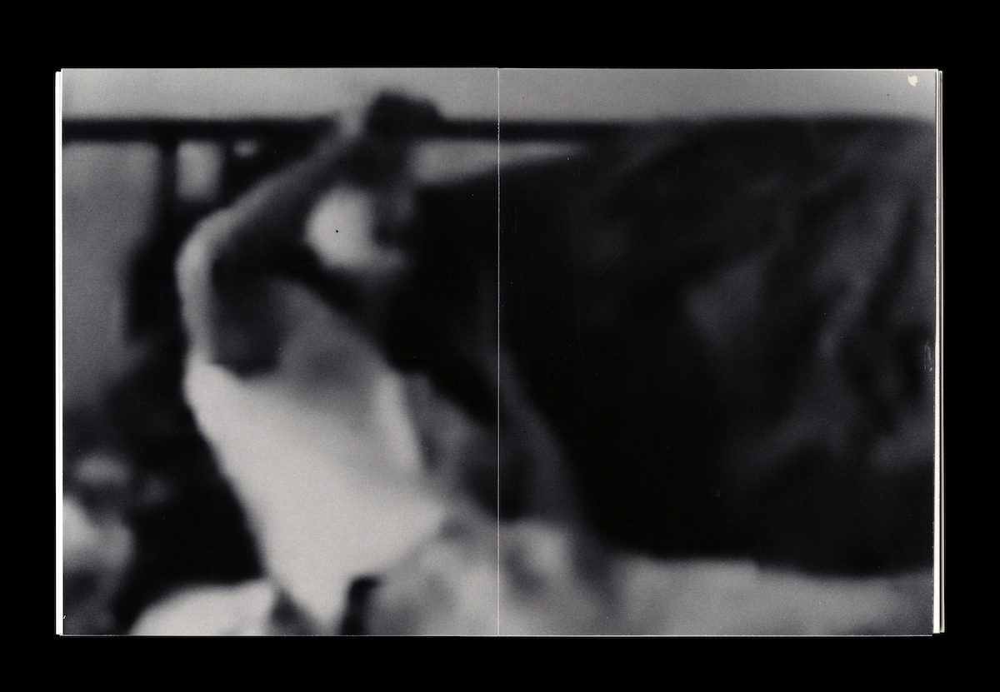
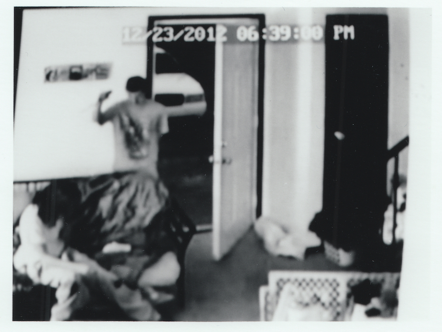

Curtis Ho (Under Construction)
Artist (b. 1998), site(s) in progress...
You can reach me via email... curtisho456 @ gmail . com
I am also on Instagram... @ ch . 456
Right now I am listening to "I Only Want To Be With You" - Tommy february6 and looking to eat zeppole.
Uncle Boy's Landscaping (Irene Hyo-Jung Song / Curtis Ho, 2018-???)
- https://geocities.ws/ubl (opens in new tab)
- Uncle Boy's Landscaping (UBL) is the collaborative practice of Irene Hyo-Jung Song and Curtis Ho.
- UBL is primarily concerned with the wide-ranging implications of landscap(e/ing) - as colonial, masculine, imbricated with systems of power. UBL has also become a vessel for thinking on karaoke, gendered rituals and games, and early political identity formation, particularly in the contexts of East Asia and its diasporas. Their research-guided practice has typically taken form as installations incorporating video, sculpture, writing and publishing, inviting collaboration and social participation.
-
Please note that the linked portfolio website has been deprecated for rebuilding on a new platform. We appreciate your patience as we return to making art together!

Selected book spreads from work as UBL, 2018-2019.

Spread from Domestic Pleasures, 2017. Silver gelatin prints in handmade book.

Image from Domestic Pleasures, 2017. Silver gelatin print.

Landscape Poster 2019, as UBL, 2019.